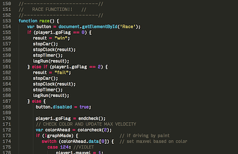

Formative Assessment for Computer Science in NYC
Integrating computer science into the United States schools is one of the most significant changes being made to K-12 public education in decades. The New York City CS4All initiative is a leader in this educational reform and serves as a model for other cities and states. One aspect of the NYC efforts is to integrate computer science concepts across disciplines. A challenge with this approach is helping non-computer science teachers, and their students, in assessing if they have met computer science learning goals. The three-year NSF funded STEM+C project Formative Assessments for Computer Science in NYC project seeks to create a method to measure this learning through an interactive technology-enhanced assessment system that will provide formative feedback to students and teachers. This project will address core research questions about how to provide ongoing assessment of student computer science (CS) learning that: (a) provides useful feedback to teachers and students; (b) is appealing for students to engage with; and (c) can be used with a wide diversity of curricula that integrate CS and STEM domains. The tool will be open-sourced and made available to approximately 600 students during the project, with an eye to serve over 100,000 diverse and low-income NYC middle school students, and eventually to other districts across the U.S. In addition, we anticipate this project will provide insight on research and design in areas as diverse as assessment, CS Ed curricula, and educational game design.
Make with Data: Exploring STEM Impact and Engagement in Student-Led and Purpose-driven Projects
We live in a data-driven age where data and the skills associated with it are in high demand in STEM fields and beyond. Many students, particularly those from groups under-represented in these professions, are given few opportunities to engage with data in a way that connects their lived experiences to scientific practices. The Make with Data project aims to address this by empowering youth to construct solutions to personally meaningful community challenges using open-source data. By putting youth in a position to identify personally meaningful projects, and anchoring them in a collaborative team of educators, data scientists, industry professionals, and community groups all with the shared aim of solving a problem in their local community, they may begin to see STEM practices as aligning with their personal identity and values.
The Make with Data (NSF #1759224) project aims to address the lack of diversity in STEM fields by engaging high school aged learners in an after-school club that uses data to identify a compelling local community challenge and to design a potential solution to address the problem. Leveraging the constructionist design paradigm and research on project-based service learning, the project will study how framing STEM practices as being a way of contributing to and improving one’s community might increase interest in and shift identity towards STEM fields.
CS-NYCE: An Ecological Approach to Understanding the Rollout of Student-Centered Computer Science Education in New York City
New York City is currently beginning the largest rollout of computer science education in the history of the United States, and one of the largest scaled rollouts of a new academic subject for American public high school students in decades. NYC is incredibly diverse; some estimates suggest that the borough of Queens in the single most pluralistic large city in the history of humanity, with hundreds of nationalities, hundreds of languages, and a remarkable range of SES attending public school together. The “Computer Science for All” (CS4All) initiative provides an incredible opportunity to evaluate the affordances and impact of K-12 CS curricula and pedagogies in highly diverse settings at a scale rarely possible.
In CS-NYCE (NSF #1645700) PIs Matthew Berland, Nathan Holbert, Betsy DiSalvo, and Mike Tissenbaum are studying imminent, core questions around the design and implementation of CS curricula in diverse NYC communities. Having real research findings on when, how, why, and what kind of initial deployments are working for underserved students will, we believe, change that conversation to be more equitable for the hundreds of thousands of students affected in NYC, and, with the new announcement of CS4All by Pres. Obama, around the USA.
Little Builders
 In an attempt to transform Thailand into a technology-driven and low inequality nation, the government has pushed forward “Thailand 4.0” economic model, which focuses on innovation and a value-based economy. However, little attention has been given to public education. To reduce inequality, people from all communities--especially from low-income communities--must have an opportunity to contribute to Thai economic mobility.
In an attempt to transform Thailand into a technology-driven and low inequality nation, the government has pushed forward “Thailand 4.0” economic model, which focuses on innovation and a value-based economy. However, little attention has been given to public education. To reduce inequality, people from all communities--especially from low-income communities--must have an opportunity to contribute to Thai economic mobility.
In Little Builders, we engage Thai public school teachers and elementary students to design and innovate constructionist projects for their own communities. The design of Little Builders builds upon the constructionist framework and participatory research methods to empower students to be in a designer role and creatively create social inventions that would solve problems in their community. Drawing on literature from culturally responsive pedagogy, this project will address research questions about a) how students’ relationship with the community impacts their persistence and engagement throughout the making process. We also explore b) how students take on a creator identity when they are building solutions for community challenges and c) how teachers and community members perceive their students as contributors for the betterment of the community after creating social solutions.
For more information see check out the Little Builders website and our recent publications!
Bots for Tots
In recent years projects designed to give children experiences building computationally embedded toys, games, and clothing using high tech equipment such as 3D printers, laser cutters, conductive paints and threads, and microcontrollers have gained momentum among researchers, educators, and parents. However there is a great danger that the gender imbalance and lack of diversity found in existing high tech communities will be replicated in this emerging maker movement. Rather than focuses maker activities around perceived gender and cultural norms we aim to explore the affordances of activities and community structures that tap into alternate mental dispositions and ways of knowing to broaden participation and interest in maker activities. Drawing on literature from the feminist tradition and research around engineering service learning we explore the design and implementation of maker activities that provide opportunities for makers to connect with and help younger members of their immediate community.
For more information and results from this work, see our recent publications!
Reimagining Game Design
Is it possible to design a video game that will fit into youth gaming culture, yet implicitly teach valued science content? This is certainly an ambition and challenging question, however the potential benefit of success necessitates action and requires a reimagining of educational games design. In this project I explore, create, and assess design principles that can be integrated into the design of popular commercial video games enabling players to connect intuitive experiences of encountered science content developed from interactions with the game, to real world and formally-taught instances of the science content. While this work has implications for exploring a variety of different STEM topics via video games, two domains are used as test-cases: kinematics and the particulate nature of matter--domains that have been shown to be difficult to learn in formal settings. Explored designs were targeted for children ages 8-13 and were used in informal play environments.
Published research on FormulaT Racing and Particles! can be found on the Publications page.


FormulaT Racing
FormulaT Racing is a prototype racing video game designed to encourage children to connect their intuitive understanding of motion to formal physics representations and real world instances of kinematics. Designed to be a constructionist environment, FormulaT Racing provides players with embodied tools that allow them to use their intuitive sense of speed to construct new representations of motion as they race a car around a track.
The original version of FormulaT Racing was written in NetLogo, and included two main phases: Racing and Pit Boss. While the racing mode looks and plays like a traditional racing game, in the pit boss mode players “program” how the car will accelerate around the track before the race began. An updated version of the pit boss mode has been recreated in JavaScript and can be played on the web at http://www.snowdaylearninglab.org/FormulaT. This beta version of FormulaT Racing is designed to be played on a motion sensitive touch device such as an iPad but can played equally well using a mouse and keyboard.
Particles!
Particles! is a prototype platformer game designed to help players connect atomic-level structures to macroscopic physical properties of matter. While playing like a traditional platformer game--where players jump from platform to platform to reach a locational goal--Particles! is different in that players construct and modify the level as they move through it. This is done by building molecular structures in the “atomizer” that can then be used to create new blocks with various physical properties (such as bounciness or slipperiness) or to remove or alter blocks that make up the game world.
Particles! is written in JavaScript and utilizes the ImpactJS engine. A beta version can be played in any web browser using a mouse and keyboard or a touch tablet device such as an iPad at http://www.snowdaylearninglab.org/Particles.